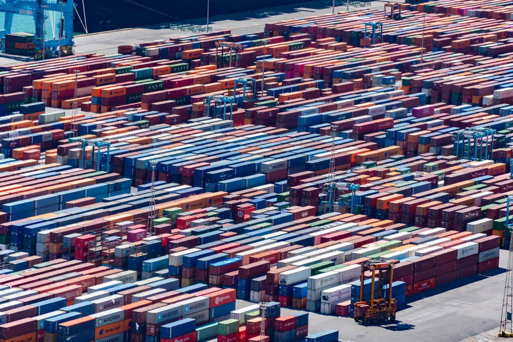
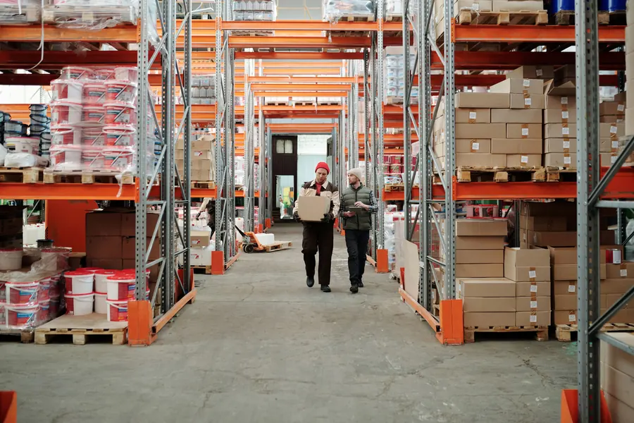
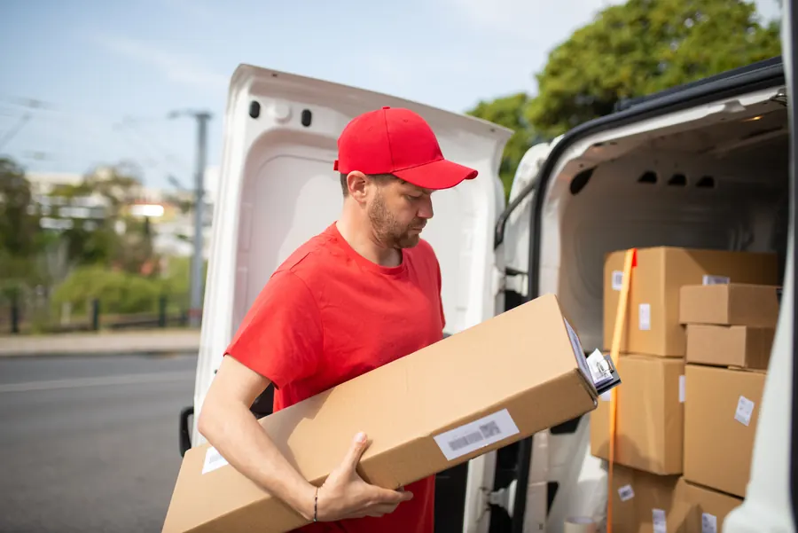
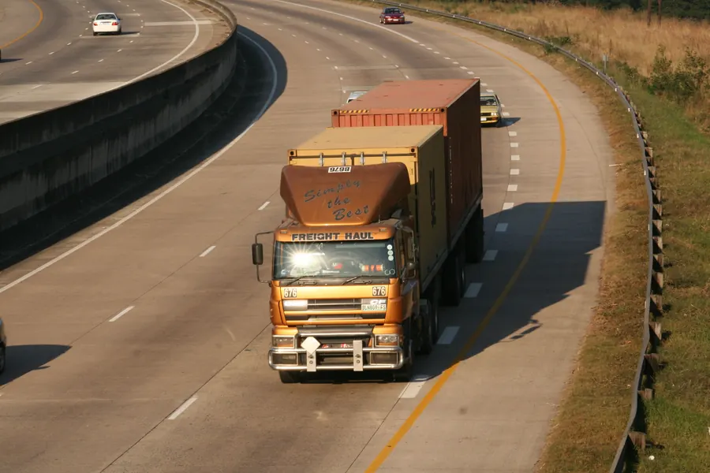
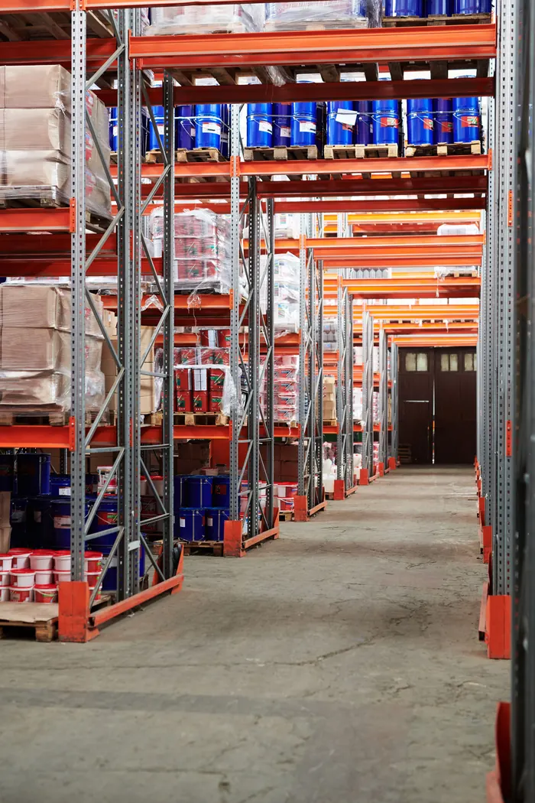
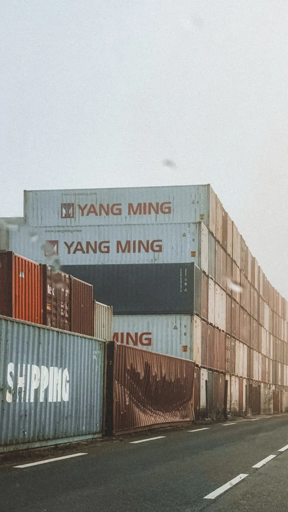
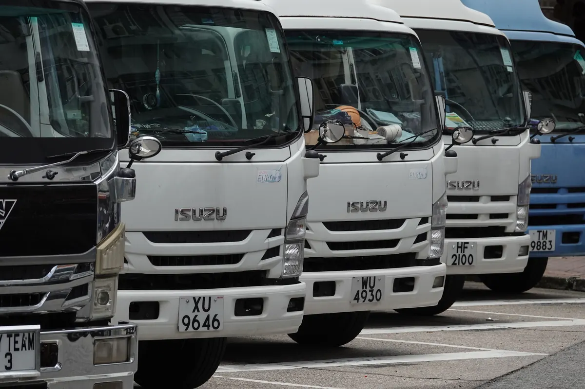
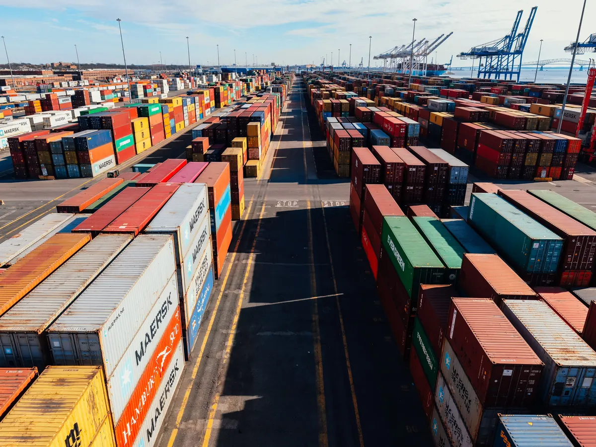

Step 01
Provide the Day's Deliveries
Import customer orders, daily fulfillment lists, and collection points using the spreadsheet formats and templates your team already relies on every day.
Custom Route Planning & Optimization · Southeast Asia
Turn tomorrow's delivery list into practical, optimized routes based on your vehicles, customers, schedules, and operating requirements.
Every morning, or every evening, someone in your business has to decide:
If your team still plans daily deliveries using spreadsheets, printed order lists, maps, and years of experience, you are not alone.
These methods may have worked well when the business was smaller. But as the number of vehicles, customers, delivery windows, and last-minute changes grows, route planning can consume more and more of your team's time.
Dymek can help you develop a customized, interactive route-planning tool built around the way your delivery operation actually works.

Which vehicle should handle each delivery?
In what order should the stops be made?
Can everything fit within the available vehicle capacity?
Which customers must be visited within a specific time window?
How can drivers avoid unnecessary travel?
What should change when a new order arrives or a vehicle becomes unavailable?
An experienced dispatcher may be able to manage this using spreadsheets and personal knowledge.
But the process can become increasingly difficult as the operation grows.
Planning may take hours. Routes may depend heavily on one person's experience. Small changes can require the entire plan to be rearranged. Vehicles may travel farther than necessary, while some drivers or trucks are overloaded and others are underused.
A customized route-planning tool helps your team consider these factors together: quickly, consistently, and with less manual effort.
Data Transformation Pipeline
The process begins with information you may already have.
Start with your current operational records without requiring a complex overhaul.
Layer in the real-world operational rules your dispatch team manages daily.
Deliver clear, structured routes ready for immediate dispatch.
A practical 4-step workflow built around your team.


The objective is not to replace your team's judgement. It is to give them a stronger and faster starting point.
Every delivery business works differently.
A food distributor may need refrigerated vehicles and strict delivery times.
A supermarket chain may need to replenish multiple stores from distribution points.
A building-material supplier may consider vehicle size, unloading time, and site access.
A regional logistics company manages mixed customers, vehicle types, and collections.
Generic software works when operations fit standard assumptions. But many established businesses have custom constraints.
A customized planning tool adapts to factors such as:
The tool adapts to the way your business operates, rather than forcing your operation into a rigid standard workflow.



Built for operations where efficiency matters and spreadsheet limitations are holding you back.
Operate your own delivery vehicles and plan multiple routes each day.
Receive delivery information through order lists and have outgrown manual dispatching.
Face recurring vehicle capacity limits, strict time windows, and customer priorities.
Need flexible tools without implementing a cumbersome enterprise transport system.
Who It's For
Select your industry to start an enquiry in one click.
The strongest fit is usually an established operation with enough daily deliveries for route efficiency to matter, but which still relies heavily on spreadsheets and dispatcher experience.
Tell us how you plan routes today. We will tell you honestly whether a custom tool makes sense.
Methodology & Engineering
A route that appears reasonable on a map may not be the best route once vehicle capacity, delivery times, driver hours, loading requirements, and customer priorities are considered together.
Our approach uses mathematical optimization and operational modelling to evaluate these factors systematically.
The technology is powered by Lynxx, a data science and optimization specialist whose technology has been serving transportation companies for the last 16 years. Dymek brings that proven technology to delivery operations across Southeast Asia, with local coordination for every project.
The goal is not to introduce complexity into your business. The goal is to place sophisticated analysis behind a planning tool that is straightforward for your team to use.
Depending on the operation, the solution may draw on:
The method is selected according to the problem. Technology is used where it produces a practical operational benefit, not simply for its own sake.

What is the most practical way to complete today's deliveries using the vehicles and drivers available?
For an SME delivery operation, the system does not need to be unnecessarily complicated. It needs to reflect the business accurately, produce useful routes, and fit naturally into the dispatcher's daily workflow.

Dymek has worked with businesses across Asia since 1989, with offices in Singapore, Thailand, Malaysia, Vietnam and the Philippines. Our local teams coordinate route-planning projects throughout the region.
We work with your team to understand:
This local coordination helps connect your operational knowledge with the Lynxx optimization technology and software expertise required to build the solution.
Route-planning projects coordinated in:
Consultation
You do not need to prepare a detailed technical specification.
Begin by showing us how your team currently plans deliveries. During an initial consultation, we discuss your setup to see whether a custom tool fits your operation.
Review your number of vehicles and approximate daily stops.
Analyze how order information is recorded and how long planning takes.
Identify where inefficiencies occur and what your ideal tool should accomplish.
From there, we can determine whether a customized route-planning tool is suitable for your operation and what the next step should be.
Tell us a little about the routes you currently run, and a member of the Dymek team will contact you to arrange an initial consultation.
Fields marked * are required. Please do not include confidential customer addresses or detailed shipment information in this form. These can be discussed securely after we contact you.
Got Questions?
Clear answers about our custom route-planning approach.
Not necessarily. The route-planning tool can begin with the information your team already maintains, including spreadsheets and exported order lists. Any integration requirements can be discussed based on your current systems and preferred workflow.
Not necessarily. GPS or telematics data may be useful for some projects, but the initial planning model can often begin with delivery locations, orders, vehicle details, operating constraints, and knowledge from your dispatch team.
Human expertise remains central. The tool is intended to support your dispatcher, not remove their control. It can generate a strong initial route plan while allowing experienced staff to review and adjust the result based on circumstances that may not be fully represented in the data.
No. The objective is to create an interactive planning tool configured around your delivery operation and its specific requirements. This is most valuable when spreadsheets have become difficult to manage and generic software does not adequately reflect the way your business works.
No. Suitability depends less on the number of vehicles than on the complexity and value of the routing problem. A business with a modest fleet may still benefit if it manages many daily stops, strict delivery windows, capacity limitations, multiple vehicle types, or complicated customer requirements.
Flexible to operational updates. The specific functionality will depend on the agreed project scope, but the planning approach can be designed to help your team update routes when orders, vehicles, or operating conditions change.
Free Initial Consultation
Your team already understands your customers, vehicles, and local operating conditions. A customized route-planning tool helps turn that knowledge into faster, more consistent, and more efficient daily plans.